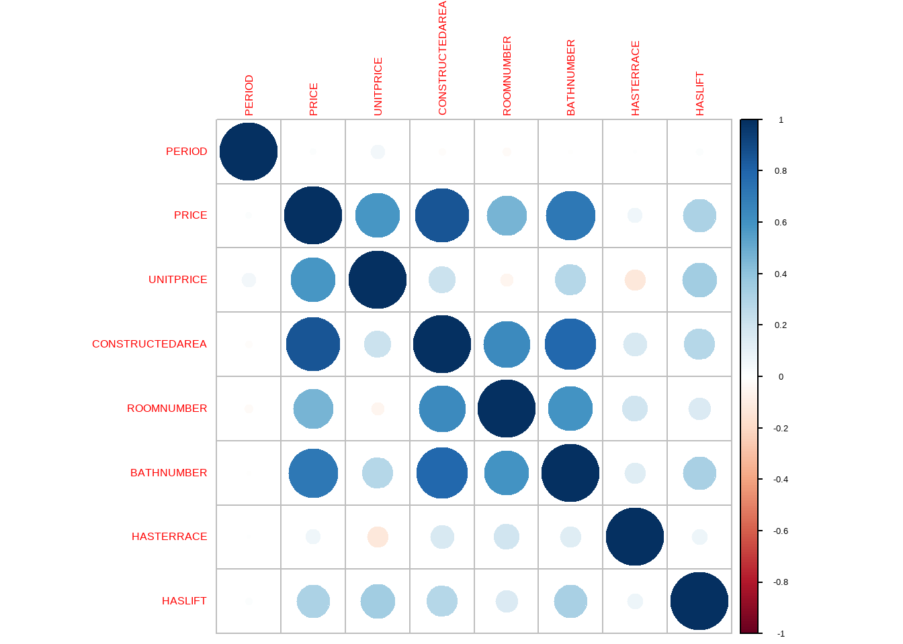

Code
library(dlookr)
dlookr::diagnose(dades)
Herramientas para el preprocesamiento de los datos
Para hacer el apartado de preprocessing vamos a utilizar la base de datos valentine_dataset.csv.
Los errores estructurales a nivel de variable se centran fundamentalmente en el tipo de dato de las variables. En primer lugar, se visualizan los datos con la función diagnose() de dlookr.
library(dlookr)
dlookr::diagnose(dades)Las observaciones duplicadas aparecen frecuentemente durante la recogida de datos e integración de las bases de datos, por lo que dichas duplicidades deben ser eliminadas en esta fase de limpieza.
A continuación, se usa la función overview() del paquete dlookr.
head(overview(dades), n = 9)Un outlier es un valor extremo que se aleja significativamente del resto de observaciones. Detectarlos es importante porque pueden distorsionar las estadísticas, influir en los modelos y generar conclusiones erróneas.
Existen diferentes enfoques: desde análisis univariantes (una variable a la vez) hasta multivariantes (considerando la relación entre varias variables).
Para detectar los valores atípicos podemos hacer uso de la función diagnose_numeric y diagnose_category.
diagnose_numeric(dades)
diagnose_category(dades)En este caso analizamos variable por variable.
La primera estrategia consiste en observar los valores mínimos y máximos de cada variable numérica. Esto nos da una primera idea de los rangos de los datos y de si existen valores extraños.
mapply(function(x, name) {
cat("var. ", name, ": \n\t min: ", min(x), "\n\t max: ", max(x), "\n")
invisible(NULL) # Evita la salida de valores NULL
}, dades[, varNum], colnames(dades[, varNum]))Otra manera de detectar outliers es usando el rango intercuartílico (IQR). Se definen como outliers los puntos que quedan fuera del intervalo:
\[ [Q1 - 1.5xIQR, Q3 + 1.5xIQR] \]
donde \(Q1\) es el primer cuartil, \(Q3\) el tercer cuartil e \(IQR = Q3 - Q1\).
library(EnvStats)
IQROutlier <- function(variable, rmnas = TRUE) {
IQ <- iqr(variable, na.rm = rmnas)
intInf <- quantile(variable, probs = c(0.25, 0.75))[[1]] - 1.5*IQ
intSup <- quantile(variable, probs = c(0.25, 0.75))[[2]] + 1.5*IQ
posicions <- which(variable >= intSup | variable <= intInf)
if (length(posicions) > 0) {
cat("Existeixen outliers en les posicions:", paste0(posicions, collapse = ", "))
} else {
cat("No existeixen outliers")
}
return(posicions)
}üëâ Aqu√≠ veremos cuántos valores son considerados extremos según este criterio en cada variable num√©rica.
Visualització basada en IQR per detectar outliers.
library(ggplot2)
variable <- "Age"
boxplot(dades[, variable])
boxplot.stats(dades[, variable])$out
# Crear un boxplot
ggplot(dades, aes(y = get(variable))) +
geom_boxplot(fill = "skyblue", color = "black") +
labs(title = paste0("Boxplot de ", variable)) +
theme_minimal()Un outlier es un valor amb |z| > 3 deviació estándar
variable <- "Age"
valorEscalado <- scale(dades[, variable])
hist(valorEscalado)
ggplot(data.frame(valor = valorEscalado), aes(x = valor)) +
geom_histogram(binwidth = 0.5, fill = "skyblue", color = "black") + # Histograma
geom_vline(xintercept = c(3, -3), linetype = "dashed", color = "red", size = 1) + # Líneas horizontales
theme_minimal()Utilitza la mediana i la desviació absoluta mediana (MAD) en lloc de la mitjana
variable <- "Age"
lower_bound <- median(dades[, variable]) - 3 * mad(dades[, variable], constant = 1)
upper_bound <- median(dades[, variable]) + 3 * mad(dades[, variable], constant = 1)
outlier_ind <- which((dades[, variable] < lower_bound) | (dades[, variable] > upper_bound))
outlier_indDetecta valors extrems en una distribució normal
library(outliers)
variable <- "Age"
test <- outliers::grubbs.test(dades[, variable], opposite = TRUE)
# amb el paràmetre opposite controles quina de les dues cues están buscant
testNomés utilitzar per a bbdd petites (entre 3 - 30) observacions
variable <- "Age"
test <- outliers::dixon.test(dades[, variable], opposite = FALSE)
testLa prueba de Rosner para valores atípicos tiene las ventajas de que: 1. se utiliza para detectar varios valores atípicos a la vez (a diferencia de la prueba de Grubbs y Dixon, que debe realizarse de forma iterativa para detectar múltiples valores atípicos), 2. Está diseñado para evitar el problema del enmascaramiento, donde un valor atípico cercano en valor a otro valor atípico puede pasar desapercibido.
A diferencia de la prueba de Dixon, tenga en cuenta que la prueba de Rosner es más apropiada cuando el tamaño de la muestra es grande (n ≥ 20).
Esta función requiere al menos dos argumentos: - los datos - la cantidad de valores atípicos sospechosos k (k = 3 como cantidad predeterminada)
Asumeix normalitat de les dades
library(EnvStats)
variable <- "Age"
test <- EnvStats::rosnerTest(dades[, variable], k = 1)
test
test$all.statsHasta ahora hemos visto cada variable por separado. Sin embargo, a veces los outliers aparecen en combinación de variables.
Para detectarlos se pueden usar métodos como la distancia de Mahalanobis o algoritmos más avanzados de detección de anomalías.
library(scatterplot3d)
library(readr)
dades <- readr::read_csv("https://archive.ics.uci.edu/ml/machine-learning-databases/forest-fires/forestfires.csv")
dades <- data.frame(dades[, c("DC", "temp", "RH")])
scatterplot3d(dades[,"DC"], dades[, "temp"],dades[, "RH"])library(rgl)
# Plot
rgl::plot3d(x = dades[, "DC"], y = dades[, "temp"], z = dades[, "RH"],
col = "black", type = 'p', radius = .1)library(plotly)
(fig <- plotly::plot_ly(dades, x = ~DC, y = ~temp, z = ~RH, size = 1) %>%
add_markers())library(mvoutlier)
dades2 <- dades; Y <- as.matrix(dades2)
distances <- dd.plot(Y,quan=1/2, alpha=0.025)
head(distances$md.cla)
head(distances$md.rob)
res <- aq.plot(Y,delta=qchisq(0.975,df=ncol(Y)),quan=1/2,alpha=0.05)
str(res)
head(res$outliers)
table(res$outliers)
#windows()
par(mfrow=c(1, 1))
library(MVN)
# mvnoutliers <- mvn(dades, multivariateOutlierMethod = "adj", showOutliers = TRUE,
# showNewData = TRUE)
mvnoutliers <- mvn(data = dades, mvn_test = "royston",
univariate_test = "AD",
multivariate_outlier_method = "adj",
show_new_data = TRUE)Visualitzem tots els outliers detectats com a true
head(summary(mvnoutliers, select = "outliers"))Visualitzem les variables originals quines han donat els que no son outliers
head(summary(mvnoutliers, select = "new_data"))Visualitzem els resultats del test de normalitat univariant
head(summary(mvnoutliers, select = "mvn"))i multivariant
head(summary(mvnoutliers, select = "univariate"))Métodes basats en correlacions ens permeten detectar outliers
Medeix la distancia de un punt respecte a la mitjana considerant la covariança
distancia_mahalanobis <- mahalanobis(dades, colMeans(dades), cov(dades))Grafiquem el plot de la densitat de les distancies
plot(density(distancia_mahalanobis))Es mostren els valors de la bbdd que queden per sobre de el 99% de la distribució chi-cuadrat
cutoff <- qchisq(p = 0.99, df = ncol(dades))
dades[distancia_mahalanobis>cutoff, ]Ordenamos de forma decreciente, según el score de Mahalanobis
dades <- dades[order(distancia_mahalanobis, decreasing = TRUE),]Visualitzem l’histograma de les distancies per veure on tallem els outliers
par(mfrow=c(1,1))
hist(distancia_mahalanobis)Descartamos los outliers según un umbral
umbral <- 8
dades[, "outlier"] <- (distancia_mahalanobis > umbral)
dades[, "color"] <- ifelse(dades[, "outlier"], "red", "black")
scatterplot3d(dades[, "DC"], dades[, "temp"], dades[, "RH"],
color = dades[, "color"])
(fig <- plotly::plot_ly(dades, x = ~DC, y = ~temp, z = ~RH,
color = ~color, colors = c('#0C4B8E', '#BF382A')) %>%
add_markers())
(quienes <- which(dades[, "outlier"] == TRUE))library(chemometrics)
dis <- chemometrics::Moutlier(dades[, c("DC", "temp", "RH")], quantile = 0.99, plot = TRUE)
par(mfrow = c(1, 1))
plot(dis$md, dis$rd, type = "n")
text(dis$md, dis$rd, labels = rownames(dades))
a <- which(dis$rd > 7)
print(a)Un punt amb un residu gran pot considerar-se un outlier
Identifica punts amb gran influència en la regresió. Un valor de Cook D_i > 1 és un outliers.
Basats en la densitat local de les dades
library(adamethods)
do_knno(dades[, c("DC", "temp", "RH")], k=1, top_n = 30)Compara la densidat de un punt amb la densidat dels seus veïns. Un valor LOF alt
library(DMwR2)
library(dplyr)
outlier.scores <- lofactor(dades[, c("DC", "temp", "RH")], k = 5)
par(mfrow=c(1,1))
plot(density(outlier.scores))
outlier.scores
outliers <- order(outlier.scores, decreasing=T)
outliers <- order(outlier.scores, decreasing=T)[1:5]Aprofitarem el ACP per poder visualizar els outliers
n <- nrow(dades[, c("DC", "temp", "RH")]); labels <- 1:n; labels[-outliers] <- "."
biplot(prcomp(dades[, c("DC", "temp", "RH")]), cex = .8, xlabs = labels)Grafiquem les correlacions per veure els gráfics
pch <- rep(".", n)
pch[outliers] <- "+"
col <- rep("black", n)
col[outliers] <- "red"
pairs(dades[, c("DC", "temp", "RH")], pch = pch, col = col)Ho visualitzem en 3D
plot3d(dades[, "DC"], dades[, "temp"], dades[, "RH"], type = "s", col = col, size = 1)library(Rlof)
outliers.scores <- Rlof::lof(dades[, c("DC", "temp", "RH")], k = 5)
plot(density(outliers.scores))
#outlier.scores <- lof(dades[, c("DC", "temp", "RH")], k=c(5:10))### Cargamos las librerias necesarias
library(R.matlab) # Lectura de archivos .mat
library(solitude) # Modelo isolation forest
library(tidyverse) # Preparación de datos y gráficos
library(MLmetrics)
# Carreguem les dades
cardio_mat <- readMat("https://www.dropbox.com/s/galg3ihvxklf0qi/cardio.mat?dl=1")
df_cardio <- as.data.frame(cardio_mat$X)
df_cardio$y <- as.character(cardio_mat$y)
datos <- df_cardioisoforest <- isolationForest$new(
sample_size = as.integer(nrow(datos)/2),
num_trees = 500,
replace = TRUE,
seed = 123
)
isoforest$fit(dataset = datos %>% select(-y))Ara anem a realitzar les prediccions.
predicciones <- isoforest$predict(
data = datos %>% select(-y)
)
head(predicciones)ggplot(data = predicciones, aes(x = average_depth)) +
geom_histogram(color = "gray40") +
geom_vline(
xintercept = quantile(predicciones$average_depth, seq(0, 1, 0.1)),
color = "red",
linetype = "dashed") +
labs(
title = "Distribución de las distancias medias del Isolation Forest",
subtitle = "Cuantiles marcados en rojo" ) +
theme_bw() +
theme(plot.title = element_text(size = 11))
cuantiles <- quantile(x = predicciones$average_depth, probs = seq(0, 1, 0.05))
cuantilesUna vez que la distancia de separación ha sido calculado, se puede emplear como criterio para identificar anomalías. Asumiendo que las observaciones con valores atípicos en una o más de sus variables se separan del resto con mayor facilidad, aquellas observaciones con menor distancia promedio deberían ser las más atípicas.
En la práctica, si se está empleando esta estrategia de detección es porque no se dispone de datos etiquetados, es decir, no se conoce qué observaciones son realmente anomalías. Sin embargo, como en este ejemplo se dispone de la clasificación real, se puede verificar si realmente los datos anómalos tienen menores distancias.
datos <- datos %>%
bind_cols(predicciones)
ggplot(data = datos,
aes(x = y, y = average_depth)) +
geom_jitter(aes(color = y), width = 0.03, alpha = 0.3) +
geom_violin(alpha = 0) +
geom_boxplot(width = 0.2, outlier.shape = NA, alpha = 0) +
stat_summary(fun = "mean", colour = "orangered2", size = 3, geom = "point") +
labs(title = "Distancia promedio en el modelo Isolation Forest",
x = "clasificación (0 = normal, 1 = anomalía)",
y = "Distancia promedio") +
theme_bw() +
theme(legend.position = "none",
plot.title = element_text(size = 11)
)La distancia promedio en el grupo de las anomalías (1) es claramente inferior. Sin embargo, al existir solapamiento, si se clasifican las n observaciones con menor distancia como anomalías, se incurriría en errores de falsos positivos.
Acorde a la documentación, el set de datos Cardiotocogrpahy contiene 176 anomalías. Véase la matriz de confusión resultante si se clasifican como anomalías las 176 observaciones con menor distancia predicha.
resultados <- datos %>%
select(y, average_depth) %>%
arrange(average_depth) %>%
mutate(clasificacion = if_else(average_depth <= 8.5, "1", "0"))
mat_confusion <- MLmetrics::ConfusionMatrix(
y_pred = resultados$clasificacion,
y_true = resultados$y)
mat_confusionLos valores faltantes aparecen cuando una observación no tiene registrado el valor en cierta variable.
Manejar correctamente los NA es esencial: eliminarlos puede reducir mucho el dataset, mientras que imputarlos incorrectamente puede introducir sesgos.
Existen varias técnicas:
üëâ La elecci√≥n depende de la importancia de la variable, la cantidad de NA y el contexto del problema.
colSums(is.na(iris))
iris.mis <- missForest::prodNA(iris, noNA = 0.1)
colSums((is.na(iris.mis)))Otra forma de crear missings en el dataframe
iris.mis <- mi::create.missing(iris, pct.mis = 10)Es un test que nos permite detectar con que tipo de NA’s estamos enfrente:
naniar::mcar_test(iris.mis)Si el valor p de la prova és inferior a 0 això vol dir que les dades amb NAs s’han generat aleatòriament.
library(visdat)
library(ggplot2)
library(naniar)
vis_dat(airquality);
vis_dat(iris.mis)
vis_miss(airquality);
vis_miss(iris.mis)
ggplot(airquality, aes(x = Solar.R,y = Ozone)) +
geom_point()
ggplot(airquality, aes(x = Solar.R, y = Ozone)) +
geom_miss_point()
ggplot(airquality, aes(x = Solar.R, y = Ozone)) +
geom_miss_point() +
facet_wrap(~Month)
ggplot(airquality, aes(x = Solar.R, y = Ozone)) +
geom_miss_point() +
facet_wrap(~Month) +
theme_dark()gg_miss_var(airquality) + labs(y = "Look at all the missing ones")aq_shadow <- bind_shadow(airquality)Imprimeix el gràfic amb diferència a les NA i no a les NA,
airquality %>%
bind_shadow() %>%
group_by(Ozone_NA) %>%
summarise_at(.vars = "Solar.R",
.funs = c("mean", "sd", "var", "min", "max"),
na.rm = TRUE)
ggplot(aq_shadow,
aes(x = Temp,
colour = Ozone_NA)) +
geom_density()prop_miss_case(airquality)
pct_miss_case(airquality)
miss_case_summary(airquality)
miss_case_table(airquality)
prop_miss_var(airquality)
pct_miss_var(airquality)
miss_var_summary(airquality)
miss_var_table(airquality)iris.mis[, "imputed_Sepal.Length"] <- with(iris.mis, Hmisc::impute(Sepal.Length, mean))pre_median <- preProcess(dades, method = "medianImpute")
imputed_median <- predict(pre_median, dades)
diagnose(imputed_median)iris.mis[, "imputed_Sepal.Length2"] <- with(iris.mis, Hmisc::impute(Sepal.Length, 'random'))De manera similar podeu utilitzar la mediana min, max, per imputar el valor que manca.
df_long <- iris.mis %>%
select(Sepal.Length, imputed_Sepal.Length, imputed_Sepal.Length2) %>%
pivot_longer(cols = everything(), names_to = "Variable", values_to = "Valor")
ggplot(df_long, aes(x = Valor, fill = Variable)) +
geom_density(alpha = 0.3) + # Transparencia para mejor visualización
labs(title = "Densidad de las tres variables",
x = "Valor",
y = "Densidad") +
theme_minimal() +
scale_fill_manual(values = c("blue", "red", "green"))
iris.mis[, c("imputed_Sepal.Length", "imputed_Sepal.Length2")] <- NULLOtra forma es usando el paquete argImpute.
(impute_arg <- Hmisc::aregImpute(~ Sepal.Length + Sepal.Width + Petal.Length + Petal.Width +
Species, data = iris.mis, n.impute = 5))Revisamos la variable Sepal.Length con la imputación realizada en cada una de las rondas.
impute_arg$imputed$Sepal.LengthCalculamos la media para las 5 simulaciones.
imputed_Sepal.Length <- rowMeans(impute_arg$imputed$Sepal.Length)
new_var_imputed <- iris$Sepal.Length
new_var_imputed[as.numeric(names(imputed_Sepal.Length))] <- imputed_Sepal.LengthRevisamos la diferencia entre las dos imputaciones.
newBD <- data.frame(real = iris[, "Sepal.Length"], imputed = new_var_imputed)
df_long <- newBD %>%
pivot_longer(cols = everything(), names_to = "Variable", values_to = "Valor")
ggplot(df_long, aes(x = Valor, fill = Variable)) +
geom_density(alpha = 0.3) + # Transparencia para mejor visualización
labs(title = "Densidad de las tres variables",
x = "Valor",
y = "Densidad") +
theme_minimal() +
scale_fill_manual(values = c("blue", "red"))Imputamos los valores NA’s con mi
mi_data <- mi::mi(iris.mis, seed = 335)Revisamos la información de las imputaciones.
summary(mi_data)
plot(mi_data)
par(ask = FALSE)Revisamos las interaciones de la base de datos
mi_data@dataDefinimos la variable target
target = "Species"Definimos la base de datos con NA’s
data <- subset(iris, select = -c(get(target)))
data <- missForest::prodNA(data, noNA = 0.1)
data$Species <- iris[, target]Definir variables a imputar (excluyendo la variable target)
varImp <- colnames(data)[which(!colnames(data) %in% target)]Calcular las medias por grupo
means <- aggregate(data[, varImp], list(data[, target]), mean, na.rm = TRUE)Imputar valores faltantes
for (c in varImp) {
for (g in means[, "Group.1"]) {
cond <- data[, target] == g # Condición booleana en vez de which()
na_index <- is.na(data[, c]) & cond # Seleccionar NA dentro del grupo
# Asignar valores imputados
data[na_index, c] <- means[means[, "Group.1"] == g, c]
}
}
summary(data)Visualizamos la diferencia entre las imputaciones
iris[, "Tipo"] <- "original"
data[, "Tipo"] <- "imputed"Unimos en un mismo dataframe
data_long <- bind_rows(iris, data)
cols_numeric <- names(data_long)[sapply(data_long, is.numeric) & names(data_long) != "Tipo"]
# Convert a large data
data_long <- data_long %>%
pivot_longer(cols = all_of(cols_numeric), names_to = "Variable", values_to = "Valor")Creamos el gráfico con ggplot
ggplot(data_long, aes(x = Valor, fill = Tipo)) +
geom_density(alpha = 0.3) + # Transparencia para comparación
facet_wrap(~Variable, scales = "free") + # Un gráfico por variable
labs(title = "Comparación de Distribuciones: Original vs Imputado",
x = "Valor",
y = "Densidad") +
theme_minimal() +
scale_fill_manual(values = c("blue", "red"))Removemos la tipologia de variable
iris.mis[, "Tipo"] <- NULLEliminamos las variables categoricas
quiCat <- which(lapply(iris.mis, class) %in% c("character", "factor"))
categories <- names(iris.mis)[quiCat]
iris.mis2 <- subset(iris.mis, select = -c(get(categories)))
summary(iris.mis2)Visualizamos los patrones de NA’s de la base de datos
par(mfrow = c(1, 1))
mice::md.pattern(iris.mis2, rotate.names = TRUE)También lo podemos visualizar con el paquete VIM
mice_plot <- VIM::aggr(iris.mis2, col=c('navyblue','yellow'),
numbers=TRUE, sortVars=TRUE,
labels=names(iris.mis), cex.axis=.7,
gap=3, ylab=c("Missing data","Pattern"))A continuación realizamos la imputación de los valores faltanes de manera multivariada
imputed_Data <- mice::mice(iris.mis2, m=5, maxit = 50, method = 'pmm', seed = 500)
summary(imputed_Data)Inspeccionamos la calidad de las imputaciones
mice::stripplot(imputed_Data, Sepal.Width, pch = 19, xlab = "Imputation number")
imputed_Data$imp$Sepal.WidthAl final seleccionamos una de las iteracciones y la dejamos como imputación de los valores faltantes.
completeData <- mice::complete(imputed_Data, action = "long")tipos <- sapply(iris.mis, class)
varNum <- names(tipos)[which(tipos %in% c("numeric", "integer"))]
data_knn_imputation <- multiUS::KNNimp(iris.mis[, varNum], k = 1)
summary(data_knn_imputation)Visualizamos la diferencia entre las dos imputaciones.
newBD <- data.frame(real = iris[, "Sepal.Length"], imputed = data_knn_imputation[, "Sepal.Length"])
df_long <- newBD %>%
pivot_longer(cols = everything(), names_to = "Variable", values_to = "Valor")
ggplot(df_long, aes(x = Valor, fill = Variable)) +
geom_density(alpha = 0.3) + # Transparencia para mejor visualización
labs(title = "Densidad de las tres variables",
x = "Valor",
y = "Densidad") +
theme_minimal() +
scale_fill_manual(values = c("blue", "red"))Otra forma de hacerlo en R seria la siguiente:
#| label: graficamos_mi_iteration
#| echo: true
#| eval: false
#| warning: false
#| message: false
#| error: false
library("caret")
pre_knn <- preProcess(dades, method = "knnImpute", k = 2)
imputed_knn <- predict(pre_knn, dades)
diagnose(imputed_knn)Imputamos los missings usando todos los parametros con los valores por defectos.
library(missForest)
iris.imp <- missForest(iris.mis, variablewise = T, verbose = T) Visualizamos los valores imputados
iris.imp$ximpVisualizamos el error cometido en las imputaciones.
iris.imp$OOBerrorNRMSE és un error normalitzat mitjà al quadrat. S’utilitza per representar l’error derivat d’imputar valors continus. El PFC (proporció de falsament classificada) s’utilitza per representar l’error derivat d’imputar valors categòrics.
Comparamos el accuracy actual,
(iris.err <- mixError(iris.imp$ximp, iris.mis, iris))Miramos la diferencia entre las dos imputaciones
newBD <- data.frame(real = iris[, "Sepal.Length"], imputed = iris.imp$ximp[, "Sepal.Length"])
df_long <- newBD %>%
pivot_longer(cols = everything(), names_to = "Variable", values_to = "Valor")
ggplot(df_long, aes(x = Valor, fill = Variable)) +
geom_density(alpha = 0.3) + # Transparencia para mejor visualización
labs(title = "Densidad de las tres variables",
x = "Valor",
y = "Densidad") +
theme_minimal() +
scale_fill_manual(values = c("blue", "red"))Quan es tracta de valors que manquen, és possible que vulgueu reemplaçar valors per valors que manquen (NA). Això és útil en els casos en què es coneix l’origen de les dades i es pot estar segur de quins valors han de faltar. Per exemple, podríeu saber que tots els valors de «N/A», «N A» i «No disponible», o -99 o -1 se suposa que falten.
naniar proporciona funcions per treballar específicament en aquest tipus de problemes utilitzant la funció replace.with.na. Aquesta funció és el compliment a tidyr::replace els NA’s, que reemplaça un valor NA per un valor especificat, mentre que naniar::replace,with_na reemplaça un valor per un NA:
tidyr::replace_na: Missing values turns into a value (NA –> -99)
naniar::replace_with_na: Value becomes a missing value (-99 –> NA)Puedes descargar el fichero de MIMMI pinchando aquí
La selección de variables involucra un conjunto de técnicas cuyo objetivo es seleccionar el subconjunto de variables predictoras más relevante para las fases de modelización. Esto es importante porque:
Variables predictoras redundantes pueden distraer o engañar a los algoritmos de aprendizaje, lo que posiblemente se traduzca en un menor rendimiento, no solo predictivo (exactitud y precisión), sino también en términos de tiempo de computación.
Igualmente, la inclusión de variables irrelevantes aumenta el coste computacional y dificulta la interpretabilidad.
Una adecuada selección de variables tiene ventajas importantes:
Debe comprobarse la magnitud de la varianza de las variables candidatas a ser seleccionadas y de sus correlaciones dos a dos, así como si existen combinaciones lineales entre ellas (multicolinealidad).
Los métodos de selección de variables se pueden resumir en 2 grandes grupos:
Nos centraremos en los que utilizan variable objetivo (supervisados). Estos se pueden dividir en los siguientes grupos:
Uno de los aspectos fundamentales en la selección de variables es comprobar si su varianza es cero o cercana a cero porque, si es así, sus valores son iguales o similares, respectivamente, y, por tanto, esas variables estarán perfectamente o cuasiperfectamente correlacionadas con el término independiente del modelo, con lo cual, en el mejor de los casos, solo añadirán ruido al modelo. Este tipo de efecto acaba afectando en la división de los conjuntos de entrenamiento y validación de los datos.
Para visualizarlo en R, podemos hacer lo siguiente:
library(caret)
library(idealista18)
library(tidyverse)
Madrid_Sale <- as.data.frame(Madrid_Sale)
numeric_cols <- sapply(Madrid_Sale, is.numeric)
Madrid_Sale_num <- Madrid_Sale[, numeric_cols]
varianza <- nearZeroVar(Madrid_Sale_num, saveMetrics = T)
head(varianza, 2) freqRatio percentUnique zeroVar nzv
PERIOD 2.019617 0.004218742 FALSE FALSE
PRICE 1.076923 2.911986500 FALSE FALSEUna de las cuestiones a tener en cuenta en el proceso de selección de variables es la magnitud de las correlaciones entre variables ya que esto puede afectar a la fiabilidad de las predicciones al tener variables muy correlacionadas. En el caso extreno el modelo tendrá problemas de colinealidad o multicolinealidad.
Para detectar las variables con muy elevada correlación entre ellas, se le pasa la función findCorrelation() de caret, con valor 0,9, a la matriz de correlaciones lineales entre las variables susceptibles de ser seleccionadas.
madrid_cor <- cor(Madrid_Sale_num[, 1:20])
(alta_corr <- findCorrelation(madrid_cor, cutoff = .9))[1] 11Para visualizar, podemos ver el corrplot:
library("corrplot")
matriz_corr <- cor(Madrid_Sale_num[, 1:8])
corrplot(matriz_corr, method = "circle")
En la mayoría de los casos las variables que se utilizan como predictoras no son ortogonales, sino que tienen cierto grado de dependencia lineal entre ellas. Si dicho grado es moderado, las consecuencias de la no ortogonalidad en la predicción no son graves, pero en los casos de dependencia lineal cuasiperfecta las inferencias resultantes del modelo estimado distan mucho de la realidad. Dichas consecuencias son aún más graves en el caso de que las combinaciones lineales sean perfectas. Por ello, la existencia de colinealidad o combinaciones lineales entre las variables seleccionables también es una circunstancia a evitar.
Las principales fuentes de multicolinealidad son:
Los efectos de la multicolinealidad en los modelos son los siguientes:
Utilizando la función findLinearCombos() del paquete caret permite encontrar combinaciones lineales de las variables predictoras.
Madrid_Sale_num_na <- tidyr::drop_na(Madrid_Sale_num) # Es necesario eliminar los NA.
(combos <- findLinearCombos(Madrid_Sale_num_na))$linearCombos
$linearCombos[[1]]
[1] 12 11
$linearCombos[[2]]
[1] 33
$remove
[1] 12 33En caso de encontrarse con problemas de multicolinealidad se deberia de realizar:
Eliminación de variables predictoras que se encuentren altamente relacionadas con otras que permanecen en el modelo
Sustituir las variables predictoras por componentes principales
Incluir información externa a los datos originales. Esta alternativa implica utilizar estimadores contraídos (de Stein o ridge) o bayesianos.
Si quisieramos eliminar variables que son combinaciones lineales deberiamos de hacer lo siguiente:
head(Madrid_Sale_num_na[, -combos$remove]) PERIOD PRICE UNITPRICE CONSTRUCTEDAREA ROOMNUMBER BATHNUMBER HASTERRACE
1 201803 126000 2680.851 47 1 1 0
2 201803 228000 4560.000 50 0 1 0
3 201803 425000 6071.429 70 1 1 0
4 201803 2349000 4333.948 542 1 1 0
5 201803 236000 4720.000 50 2 1 0
6 201803 1131000 5463.768 207 5 3 0
HASLIFT HASAIRCONDITIONING AMENITYID HASPARKINGSPACE PARKINGSPACEPRICE
1 1 1 3 0 1
2 0 0 3 0 1
3 1 0 1 1 1
4 1 1 3 0 1
5 0 0 3 0 1
6 1 0 3 1 1
HASNORTHORIENTATION HASSOUTHORIENTATION HASEASTORIENTATION HASWESTORIENTATION
1 0 0 0 0
2 0 0 0 0
3 0 0 0 1
4 0 0 0 0
5 0 0 1 0
6 0 1 1 0
HASBOXROOM HASWARDROBE HASSWIMMINGPOOL HASDOORMAN HASGARDEN ISDUPLEX ISSTUDIO
1 1 1 1 1 1 0 0
2 0 0 0 0 0 0 1
3 0 0 0 0 0 0 0
4 0 0 0 0 0 0 0
5 0 0 0 0 0 0 0
6 1 0 0 1 0 0 0
ISINTOPFLOOR CONSTRUCTIONYEAR FLOORCLEAN FLATLOCATIONID CADCONSTRUCTIONYEAR
1 0 2005 1 1 2005
2 0 1930 0 1 1930
3 0 1900 2 1 1900
4 0 1890 1 1 1890
5 0 1900 3 1 1900
6 0 1940 0 1 1940
CADMAXBUILDINGFLOOR CADDWELLINGCOUNT CADASTRALQUALITYID BUILTTYPEID_2
1 7 319 3 1
2 5 19 7 0
3 5 16 1 0
4 4 11 2 1
5 5 6 6 1
6 5 29 4 1
BUILTTYPEID_3 DISTANCE_TO_CITY_CENTER DISTANCE_TO_METRO
1 0 8.0584293 0.8720746
2 1 1.2502313 0.3370982
3 1 0.7535746 0.4371906
4 0 0.6227413 0.1622422
5 0 1.0341080 0.3147058
6 0 0.6328356 0.1954949
DISTANCE_TO_CASTELLANA LONGITUDE LATITUDE
1 6.868677 -3.766933 40.36248
2 1.794136 -3.714340 40.40874
3 1.548310 -3.712390 40.41487
4 1.453994 -3.711072 40.41734
5 1.622230 -3.712053 40.40976
6 1.400989 -3.709651 40.42011En el subset de variables que sobrevivien al proceso anterior, es necesario detectar cuales de ellas han de entrar en el modelo. Esta fase se realiza porque:
Los métodos de selección de variables tipo filtro usan técnicas estadísticas para evaluar la relación entre cada variable predictora y la variable objetivo. Generalmente, consideran la influencia de cada variable predictora sobre la variable objetivo por separado. Las puntuaciones obtenidas se utilizan como base para clasificar y elegir las variables predictoras que se utilizarán en el modelo.
Si la variable predictora es numérica, entonces se usa el coeficiente de correlación de Pearson o el de Spearman (si es o no lineal). Si las variables fueran todas categóricas se podria usar medidas de asociación para tablas de contingencia. Por lo contrario si la entregada es categorica y la salida es numérica se podrian usar técnicas de ANOVA para analizar que variables son influeyentes.
Podemos usar diferentes paquetes como FSelector, caret para implementar dicha técnica. En este caso, usaremos el paquete FSinR. A continuación se muestra un ejemplo para variables predictoras numéricas. Para ello, se toma una muestra del conjunto de datos. Una vez en disposición de la muestra, primeramente se transforma la variable objetivo en categórica, siendo las categorías (intervalos) cuatro cortes de la distribución de sus valores; dicha categorización se lleva a cabo mediante binning También se eliminan los registros con datos faltantes.
library("rsample")
# Se toma una muestra con el paquete rsample
set.seed(7)
Madrid_Sale_num_sample <- sample(1:nrow(Madrid_Sale_num), size = 5000, replace = FALSE)
Madrid_Sale_num_sample <- Madrid_Sale_num[Madrid_Sale_num_sample, ]
# Se realiza binning con cuatro bins
Madrid_Sale_num_sample_bin <- Madrid_Sale_num_sample |>
mutate(price_bin = cut(PRICE, breaks = c(0, 250000, 500000, 750000, 10000000), labels = c("primerQ", "segundoQ", "tercerQ", "c"), include.lowest = TRUE)) |>
select(price_bin, CONSTRUCTEDAREA, ROOMNUMBER, BATHNUMBER, HASTERRACE, HASLIFT)
# Se eliminan los registros con valores missing
Madrid_Sale_sample_na <- drop_na(Madrid_Sale_num_sample_bin)Una vez discretizada la variable objetivo, se selecciona el conjunto de variables predictoras de la variable objetivo price_bin, que es la variable PRICE transformada mediante binning. Como método tipo filtro se utiliza minimum description length (MDLM), que es un método de selección de variables que se basa en una medida de la complejidad del modelo denominada “longitud mínima de la descripción” (de ahí el nombre del modelo), por lo que su objetivo es encontrar el modelo más sencillo que proporcione una explicación aceptable de los datos. Como algoritmo de búsqueda se utiliza sequential forward selection.
library("FSinR")
# Método tipo filtro MDLC (Minimum-Description_Length-Criterion)
evaluador <- filterEvaluator("MDLC")
# Se genera el algoritmo de búsqueda
buscador <- searchAlgorithm("sequentialForwardSelection")
# Se implementa el proceso, pasando a la función los dos parámetros anteriores
resultados <- featureSelection(Madrid_Sale_sample_na, "price_bin", buscador, evaluador)
# Se muestran los resultados
resultados$bestFeatures
resultados$bestValueEste enfoque realiza una búsqueda a través de diferentes combinaciones o subconjuntos de variables predictoras/clasificadoras para comprobar el efecto que tienen en la precisión del modelo.
Los métodos wrapper son de gran eficacia a la hora de eliminar variables irrelevantes y/o redundantes (cosa que no ocurre en los de tipo filtro porque se centran en el poder predictor de cada variable de forma aislada).
tienen en cuenta la circunstancia de que dos o más variables, aparentemente irrelevantes en cuanto a su capacidad predictiva o clasificatoria cuando se consideran una por una, pueden ser relevantes cuando se consideran conjuntamente. Sin embargo, son muy lentos, ya que tienen que aplicar muchísimas veces el algoritmo de búsqueda, cambiando cada vez el número de variables, siguiendo cada vez algún criterio tanto de búsqueda como de paro.
# Se fijan los parámetros
evaluador <- wrapperEvaluator("rpart1SE")
buscador <- searchAlgorithm("sequentialForwardSelection")
# Se evalúan sobre Madrid_Sale_sample_na
results <- featureSelection(Madrid_Sale_sample_na, "price_bin", buscador, evaluador)
resultados$bestFeatures
resultados$bestValueHay algunos algoritmos de aprendizaje automático que realizan la selección automática de variables como parte del aprendizaje del modelo. Estos son los métodos de selección de tipo intrínseco, que aglutinan las ventajas de los métodos de filtro y envoltura.
library("randomForest")
# Usar random forest para la selección de variables
rf_modelo <- randomForest(price_bin ~ ., data = Madrid_Sale_num_sample_bin)
# Listar las variables más importantes
varImp(rf_modelo)La ingeniería de variables consiste en el proceso de conseguir, a partir de la información disponible, las variables idóneas (y en el número apropiado) para que los modelos o clasificadores proporcionen los mejores resultados posibles, dados los datos disponibles y el modelo a ejecutar.
Una de las herramientas más populares es el One-hot encoding. El One-hot encoding consiste en asignar a cada etiqueta un número entero o valor único según el orden alfabético. Es la codificación más popular y ampliamente utilizada.
dummies <- dummyVars(" ~ .", data = Madrid_Sale_num_sample_bin)
head(predict(dummies, newdata = Madrid_Sale_num_sample_bin))Al final del proceso de limpieza de datos, estos deberían ser consistentes y seguir las reglas apropiadas para su campo de negocio. De no ser así, los modelos que se estimen en base a ellos no representarán convenientemente la realidad objeto de estudio y las conclusiones que se obtengan de dichos modelos no serán de utilidad para dicha realidad.
La verificación de si los datos son o no consistentes y si siguen o no las reglas del campo de negocio del cual proceden se puede llevar a cabo con el paquete tidyverse, que permite hacer selecciones, filtrados o tablas de frecuencias, entre otras acciones.
Una opción más sofisticada es el paquete validate, donde se pueden introducir las reglas de negocio dentro del propio código o bien desde un fichero externo. A continuación, se realiza un ejemplo con las reglas incrustadas en el propio código. Estas reglas pueden ser avisos o normas que indican error en esos datos. En este ejemplo, se han definido siete reglas: por ejemplo, PRICE ≥ 0, o que la suma de las variables HASNORTHORIENTATION, HASSOUTHORIENTATION, HASEASTORIENTATION y HASWESTORIENTATION sea la unidad. La salida que se obtiene se presenta a continuación.
library("validate")
Madrid_Sale_int |>
check_that(
HASLIFT >= 0,
PRICE >= 0,
HASNORTHORIENTATION + HASSOUTHORIENTATION + HASEASTORIENTATION + HASWESTORIENTATION == 1,
is.numeric(PRICE),
UNITPRICE * CONSTRUCTEDAREA == PRICE,
if (ROOMNUMBER > 3) PRICE > 100000,
nrow(.) >= 20000
) |>
summary() name items passes fails nNA error warning
1 V1 94815 94815 0 0 FALSE FALSE
2 V2 94815 94815 0 0 FALSE FALSE
3 V3 94815 28080 66735 0 FALSE FALSE
4 V4 1 1 0 0 FALSE FALSE
5 V5 94815 20111 74704 0 FALSE FALSE
6 V6 94815 94786 29 0 FALSE FALSE
7 V7 1 1 0 0 FALSE FALSE
expression
1 HASLIFT - 0 >= -1e-08
2 PRICE - 0 >= -1e-08
3 abs(HASNORTHORIENTATION + HASSOUTHORIENTATION + HASEASTORIENTATION + HASWESTORIENTATION - 1) <= 1e-08
4 is.numeric(PRICE)
5 UNITPRICE * CONSTRUCTEDAREA == PRICE
6 ROOMNUMBER <= 3 | (PRICE > 1e+05)
7 nrow(.) >= 20000En un esquema tradicional de validación, además de las reglas de validación aportadas por los expertos en el tema del que se trate, debe incluirse también un listado de reglas de corrección (igualmente aportado por los expertos en la materia) que indique cómo hay que corregir un registro cuando no cumple con una determinada regla de validación. Este modo de proceder, además de suponer un doble esfuerzo, puede conducir a inconsistencias o validaciones cíclicas.
El Método de Fellegi y Holt (MFH) da una solución a este problema, evitando dichas inconsistencias, proporcionando un procedimiento que genera un conjunto completo de reglas de validación, incorporando reglas implícitas a las formuladas por los expertos de manera explícita.
Dicho método asegura el cumplimiento de las siguientes tres premisas:
El MFH no está exento de limitaciones. La primera es el incremento del coste computacional, que puede llegar a constituir un problema en caso de que el número de reglas implícitas sea muy elevado, lo cual es muy frecuente. De hecho, hay casos en los que hay más reglas implícitas que registros. Para solucionar este problema, denominado “problema de localización del error”, que consiste, básicamente, en determinar el conjunto mínimo de variables a corregir para cada validación, se han propuesto varias alternativas, que incluyen métodos de investigación de operaciones, árboles binarios y metaheurísticas como algoritmos genéticos y similares.
A efectos prácticos, el MFH se puede aplicar con la función locate_errors() del paquete errorlocate, determinándose así cuáles son las variables a corregir para solventar los errores en las reglas de negocio establecidas (objeto rules).
library("errorlocate")
Madrid_Sale_red2 <- mutate(Madrid_Sale_int, price_bin = Hmisc::cut2(PRICE, g=4))
rules <- validator(if (ROOMNUMBER >= 10) price_bin == "[502000,7138000]")
(el <- locate_errors(Madrid_Sale_red2, rules) |>
summary(el))Variable:
name errors missing
42 price_bin 45 0
6 ROOMNUMBER 35 0
1 ASSETID 0 0
2 PERIOD 0 0
3 PRICE 0 0
4 UNITPRICE 0 0
5 CONSTRUCTEDAREA 0 0
7 BATHNUMBER 0 0
8 HASTERRACE 0 0
9 HASLIFT 0 0
10 HASAIRCONDITIONING 0 0
11 AMENITYID 0 0
12 HASPARKINGSPACE 0 0
13 ISPARKINGSPACEINCLUDEDINPRICE 0 0
14 PARKINGSPACEPRICE 0 0
15 HASNORTHORIENTATION 0 0
16 HASSOUTHORIENTATION 0 0
17 HASEASTORIENTATION 0 0
18 HASWESTORIENTATION 0 0
19 HASBOXROOM 0 0
20 HASWARDROBE 0 0
21 HASSWIMMINGPOOL 0 0
22 HASDOORMAN 0 0
23 HASGARDEN 0 0
24 ISDUPLEX 0 0
25 ISSTUDIO 0 0
26 ISINTOPFLOOR 0 0
27 CONSTRUCTIONYEAR 0 55873
28 FLOORCLEAN 0 3846
29 FLATLOCATIONID 0 6387
30 CADCONSTRUCTIONYEAR 0 0
31 CADMAXBUILDINGFLOOR 0 0
32 CADDWELLINGCOUNT 0 0
33 CADASTRALQUALITYID 0 1
34 BUILTTYPEID_1 0 0
35 BUILTTYPEID_2 0 0
36 BUILTTYPEID_3 0 0
37 DISTANCE_TO_CITY_CENTER 0 0
38 DISTANCE_TO_METRO 0 0
39 DISTANCE_TO_CASTELLANA 0 0
40 LONGITUDE 0 0
41 LATITUDE 0 0
Errors per record:
errors records
1 0 94735
2 1 80¿Y qué se debe hacer con los registros que no cumplen las normas de validación? La respuesta es, como norma, “siempre que se disponga de información de negocio, esta debe preponderar sobre cualquier tipo de imputación”. A partir de este punto se puede proceder a realizar imputaciones determinísticas para solucionar los problemas detectados.
En el ejemplo anterior, se propone imputar el valor ROOMNUMBER=5 a los casos de los tres primeros cuartiles (todos menos el más caro) que tengan más de 10 habitaciones. Para ello, se utiliza la función modify_so() del paquete dcmodify. Para comprobar que la imputación se ha llevado a cabo con éxito, se pueden comparar los conjuntos de datos antes y después de la imputación con la función compare(), comprobándose que tal imputación se ha realizado exitosamente en los 2 registros que presentaban problemas con la regla ROOMNUMBER >= 10.
library("dcmodify")
out <- Madrid_Sale_red2 |>
modify_so(if (ROOMNUMBER >= 10 & price_bin != "[502000,7138000]") ROOMNUMBER <- 5)
rules <- validator(if (ROOMNUMBER >= 10) price_bin == "[502000,7138000]")
compare(rules, raw = Madrid_Sale_red2, modified = out)Object of class validatorComparison:
compare(x = rules, raw = Madrid_Sale_red2, modified = out)
Version
Status raw modified
validations 94815 94815
verifiable 94815 94815
unverifiable 0 0
still_unverifiable 0 0
new_unverifiable 0 0
satisfied 94735 94815
still_satisfied 94735 94735
new_satisfied 0 80
violated 80 0
still_violated 80 0
new_violated 0 0Esta web está creada por Dante Conti y Sergi Ramírez, (c) 2025